一、Tokenization
将原始文本拆分成一个个token
1. 字粒度
对于英语：按字母分割
对于中文：按字分割
优点：词表小
缺点：丢失了大量词汇的语义信息与边界信息、难以训练、对计算也会带来压力（输入输出变多）
2. 词粒度
对于英语等拉丁语言：按空格切分
对于中文：前（后）向最大匹配法、最短路径分词法、基于 N-gram 的统计词频分词法
(1) 前向最大匹配法
选定最大匹配长度，例如2（可以更长），根据词典从最长开始匹配，只要词典中有这个词就匹配成功。
eg：他说的确实在理。先匹配“他说”，词典中没有这个词，开始匹配“他”，有这个词，断句。匹配“说的”，词典里没有这个词，匹配“说”，然后断句。最终匹配成果“他 说 的确 实在 理。”
可以看到，这种tokenization办法无法解决歧义的问题，N的选取以及前向后向的选取对结果影响很大。
(2) 最短路径分词法
将每个字分隔开构造词图，每个路径上都有一个数字代表权重，其中搜索词库中存在的词语构建短路径，即权重更小，最后寻找最短路径为所求分词结果。
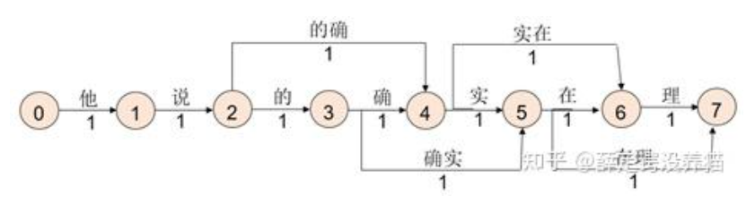本例的分词结果为：他 说 的确 实在 理
可以发现是对前一种匹配方式的小优化，仍存在相同的问题，存在歧义。
(3) 基于N-gram 的统计词频分词法
与最短路径分词法类似，只不过权重取值该为了n-gram假设中的条件概率。
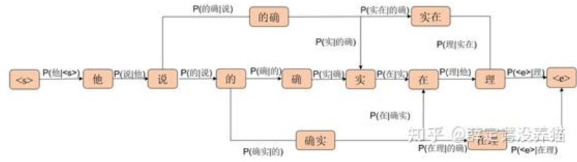（4）优缺点
优点：能很好保留词的边界信息，保留词汇的含义。
缺陷：需要构造的词典过大、低频词无法充分训练、对于英文中一个词语多种形态没有良好的适应性（look、looks、looking需要分为三个词来训练）
3. subword
目前最常用的tokenization方法，主要有四种方法，分别为BPE、WordPiece、Unigram、SentencePiece
(1) BPE
全程Byte Piar Encoding，字节对编码

即先将所有单词拆分为字母粒度，例如 l o w : 5， 单词low就被分为3个字符，接着再选连续出现频率最高的两个字符，将其合并并且添加到词表中，合并后的字符再后续添加中视为一个字符。例如第三轮添加est，实际上是因为第二轮往词库里加了es之后，将es视为一个整体，再找连续的情况下est出现的概率最高。一直如此循环直到达到设定的词库数目上限为止。
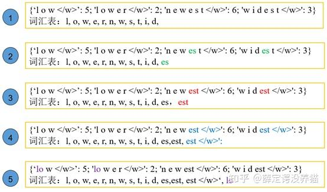构建完词典后，用前向最大匹配来进行编码，从而实现分词。
BBPE原理类似，只不过最开始不是按字符划分，而是按Byte划分。缺点就是有可能编码产生一些中间态，编码产生的序列长度可能会更长。好处是可以处理多语言。
（2）WordPiece
与BPE算法类似，只不过不是基于最高的频数（例如刚刚上述例子，取得是最高的es，因为es组合出现的次数最多），而取得是最高的score值，其中$score(e,s)=\frac{count(es)}{count(e)*count(s)}$，这样可以缓解语料库中不同语句的不平衡。
（3）Unigram
前两者相当于对词典做加法，而Unigram是对词典做减法，从一整个大的词典开始（包括所有subword，当然提前设定了最大subword的字符数）逐个删除某些subword。减法的方法是利用unigram语言模型（认为subword之间是独立的），对每个删除了subword后的语言模型loss进行评分，由于优秀的subword可以使得loss更小，所以删除后loss减少（更多情况下会是loss增加的最少），代表这个待删除的subword是糟糕的，因为如果删除的是优秀的subword会使得loss显著增大。每一次删除会删除一定比例的subword，而不是只删除一个。注意不删除单个字符，避免出现OOV。
loss就是似然值的负对数和，详见https://zhuanlan.zhihu.com/p/716907570
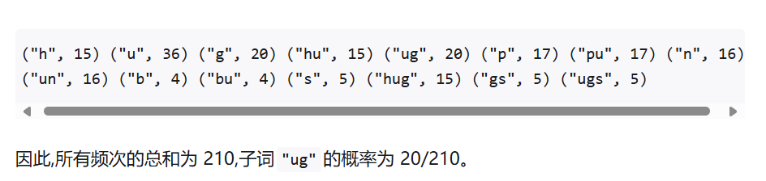（4）SentencePiece
前三者存在两个问题：无法逆转、推理时需要提前切分。例如对于“Hello Word!”的分词与“Hello World !”的分词是等价的。
SentencePiece采取以下方法解决问题：输入全转为Unicode、空格被处理为特定的token(元符号’_’，U+2581)、直接处理raw文本
处理后再用BPE或者Unigram来训练分词。
缺陷：处理短文本效果可能不好，可能会出现奇怪的分词；可能会出现将空格(也就是’_’)与其他单词混合起来的奇怪分词；对整体性分词性能较差（”北京大学“分成“北京” 大“ ”学“）
二、词向量
将输入的token数字化
1. 词袋法
实际上词袋法是统计一个句子中不同token的次数，并将整个句子转化为一个向量，仅存储了每个词语是否出现（或者出现的次数），无法记录语义信息与位置信息。
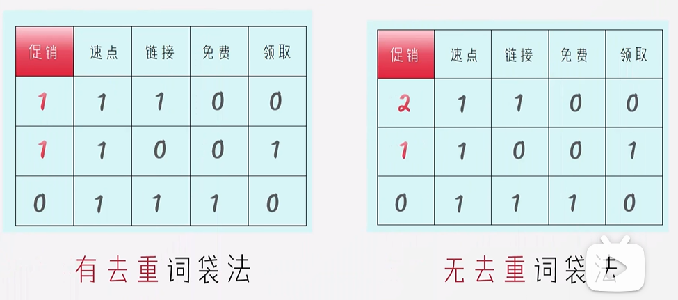2. tf-idf
考虑到了不同词的稀有度不同，稀有度是在语料库中统计求出$log(\frac{总文档数}{含有这个词的文档数})$来反应这个词的稀有度，将最后得到的稀有性乘上句子中出现的词频，最为最终的句向量。可以用来提取关键词
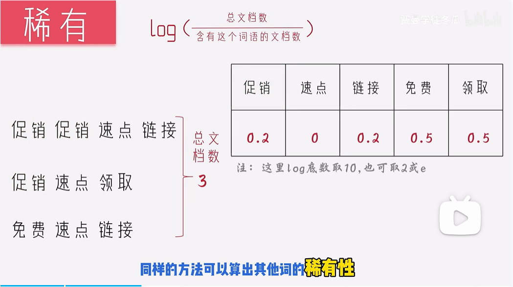 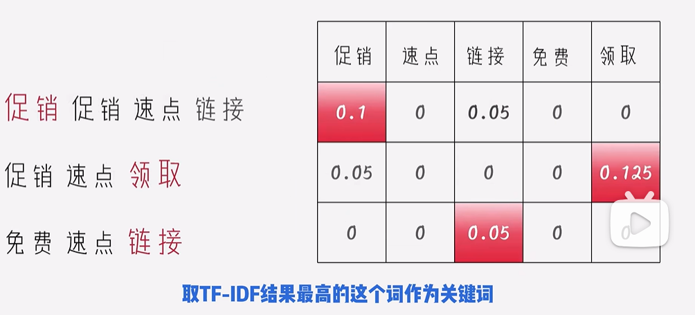3. Word Embedding
x为独热编码，将x右乘一个矩阵Q，得出的向量就是x的词向量。
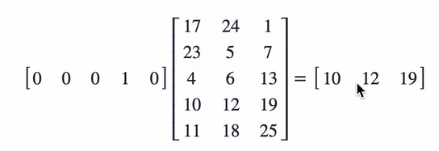上述示例实际上是提取了右边这个矩阵第四行的值（一一对应的表查询）。这样就能让词向量具备语义关系，只需要训练好右边的这个矩阵就行。
4. Word2Vec
用于训练词嵌入矩阵Q的模型
模型的输出其实不是很重要，训练好的Word2Vec模型往往具备优秀的Q。模型：softmax(W(xQ)+b)，没有激活函数。
（1）CBOW：给出一个词的上下文，来得到这个词。其实就是挖词填空，用一个模型来预测这个空。
（2）Skip-gram：给出一个词，预测这个词的上下文。
缺点：难以训练出一词多义
5. ELMo（Embedding from Language Models）
也是专门做词向量的模型，可以解决Word2Vec中词向量一词多义问题。
不只是训练一个Q矩阵，还会把上下文信息融入Q矩阵。
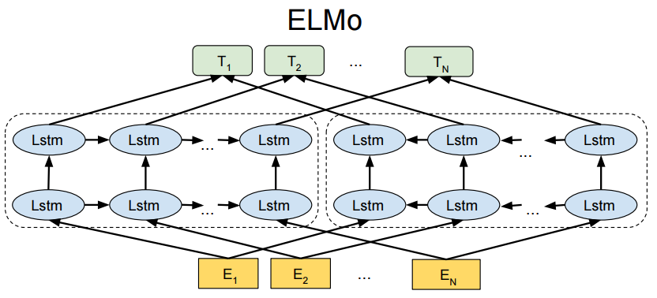E是已经乘一个预训练的Q得到的词向量， 然后用两层LSTM（超参数）拼接上下文信息，左边可以提取上文信息，右边可以提取下文信息。
利用上下文语义信息能对原本的词向量进行调整，进而对一词多义的状况进行调整。例如苹果公司与苹果水果，Apple往往与科技的上下文相关，例如手机，公司等，而水果苹果往往与吃相关。
三、Attention注意力机制
会把注意力聚焦到更重要的事物上，dot(Q,K)V，自注意机制，就是QKV同源；交叉注意力机制，一方提供Q，另一方提供KV
1. 自注意机制
$softmax(\frac{dot(Q,K^T)}{\sqrt{d_k}})V$，$d_k$是词向量维度，假设独立分布的$q_i$，$k_i$均值为0，方差为1，那么$dot(q,v)=\Sigma_{i=1}^{d_k}q_i*k_i$均值为0，方差变为$d_k$，会导致进入softmax的值过于大，故采用scaled Dot-Product Attention除掉$\sqrt{d_k}$
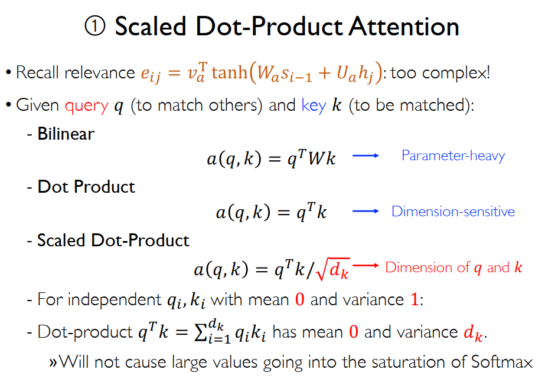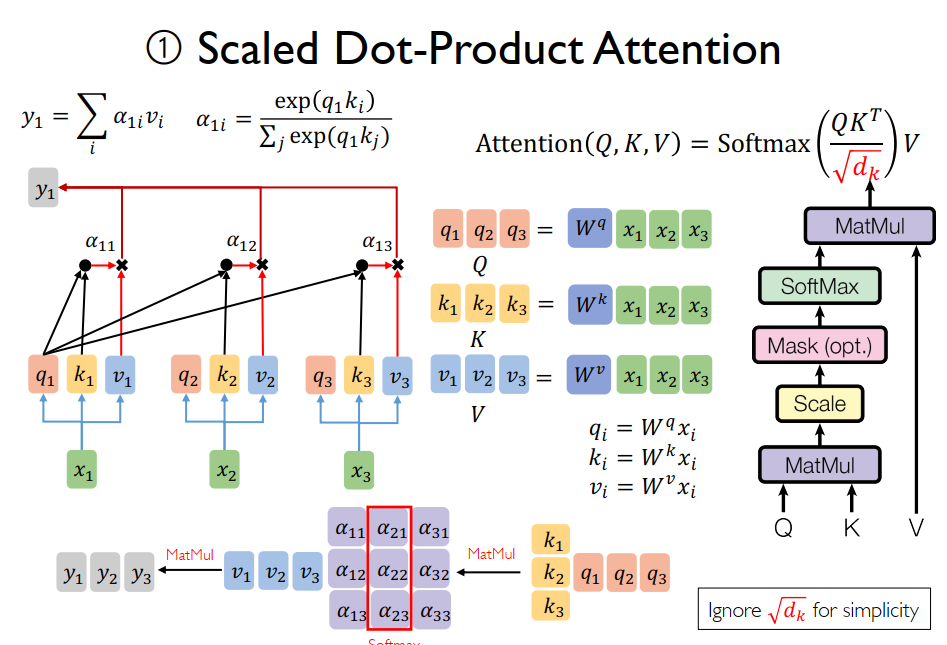
2. 掩码自注意力机制
masked self-attention
解决训练过程中的问题： 实际上让训练过程可以并行计算，即一次性能训练一整个句子。
 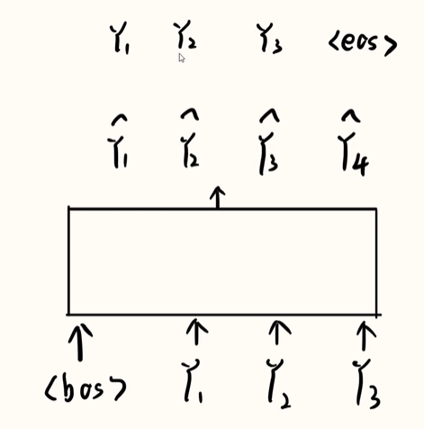
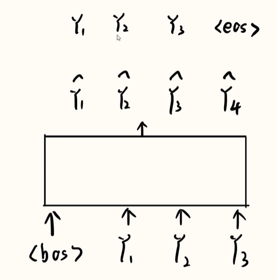
3.多头自注意力机制
multi-head self-attention
类比CNN中一层中用多个卷积核(channels 数)，多头个数用h表示，一般取h=8。
会用一个W对多头输出的多个y进行处理
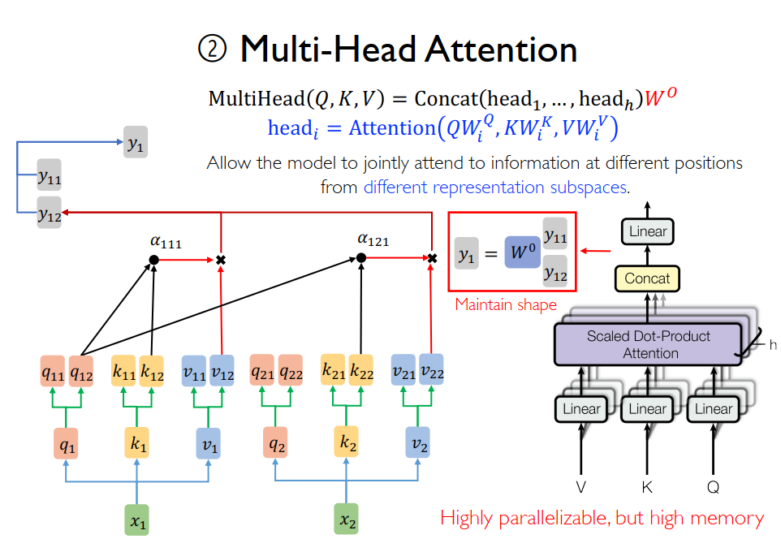4. 位置编码
attention机制不包含位置信息，即打乱一句话，对词向量没影响。
在embedding和attention之间加一个向量，pos代表位置，i代表维度，i从0开始
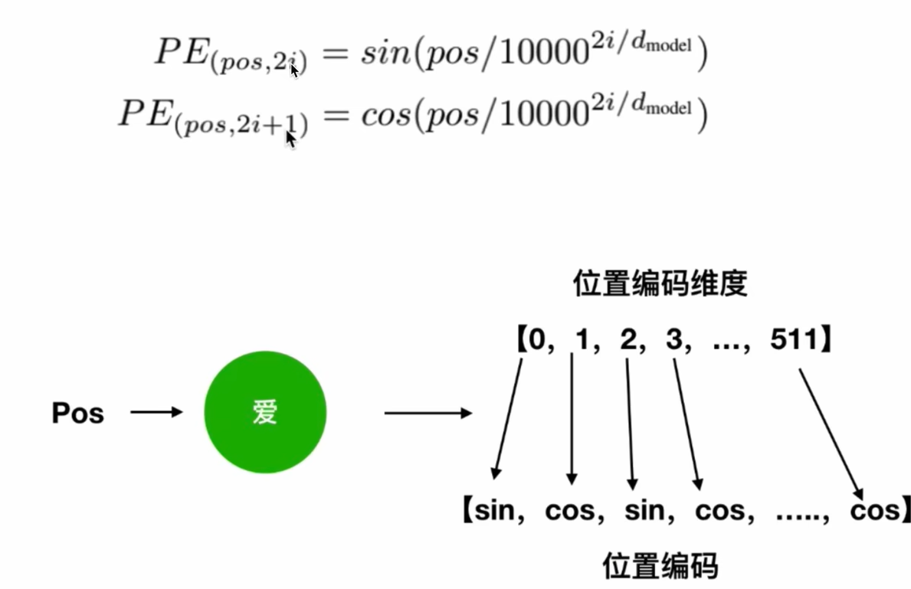位置编码这样的构造即可保证绝对的位置信息，也可保证相对的位置信息
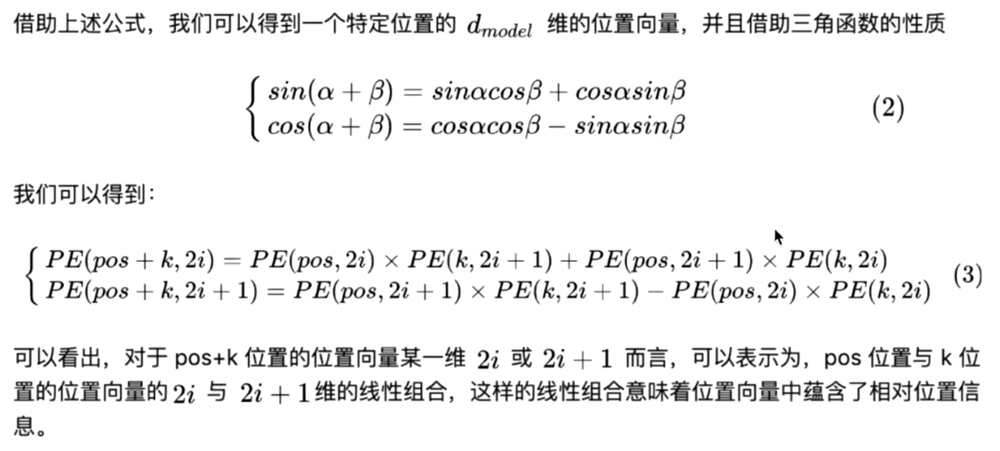5.Layer Normalize
norm：变成均值为0，方差为1的分布。$x=\frac{x-u}{\sigma}$，其中u为均值，$\sigma$为标准差。训练时取小批量的均值和标准差。训练结束后取整个数据的均值和标准差用于推理。训练时还会把学习两个参数，将均值和方差变到合适的一个分布。能加速收敛，提高训练稳定性
BN：对一个特征进行norm，CNN就是对不同channels进行norm。缺点：对变长数据效果不佳。优点：训练时不同的minibatch会有不同的分布，可以为整体的训练添加随机性，避免过拟合。适用于批量大小较大的情况，尤其是在图像处理任务中。BN能够有效地减少内部协变量偏移，加速模型的训练过程，并提高模型的泛化能力。
抹杀了不同特征之间的大小关系，强行将不同特征缩放至同一个分布（适合CNN，因为RGB三个值都位于(0,255)；保留了不同样本的特征之间的大小关系。（适合CNN，保留了不同图片的颜色深浅不同）
LN：对一个batch进行norm，CNN就是对每张图片（每个batch）进行norm。优点：不依赖batch和seq影响，能适应不同长度的输入,在批量较小的时候效果优于BN。
抹杀了不同样本之间的大小关系，每个样本的整体取值都比较平均（不适合CNN，会使得一张深红色的图片与浅红色的图片无异）；保留了同一样本不同特征之间的大小关系。（适合Transformer，保留了pos位置信息）
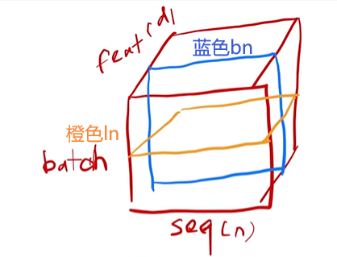上图是李沐老师所讲的ln与bn的差异，需要往LayerNorm里传入二维张量。若传入数字，则仅对一个词的d_model作归一化，如下图所示：
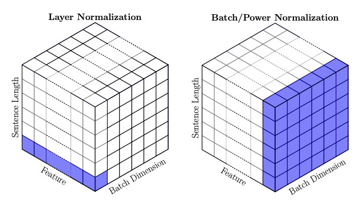四、Transformer
seq2seq模型，即序列到序列
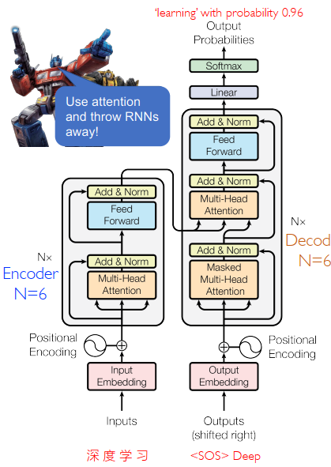推理：
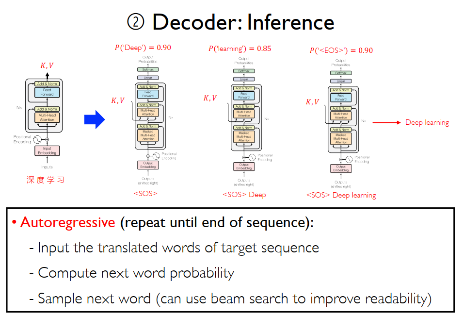 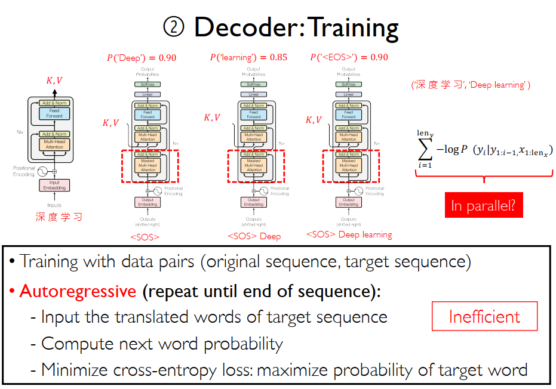交叉注意力层中，Encoder提供KV，Decoder提供Q
Transformer在推理输出时，存在巨大的性能浪费：以机器翻译为例，将我是一名学生翻译为I am a student。transformer中decoder输入I am a，这一轮的输出是am a student。前面的”am a”被重复推理，实际上只输出了一个student作为有效的输出。
五、Inductive Biases（归纳偏置）
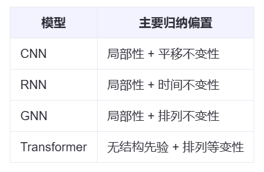无结构先验：任意两个位置的输入都可以做注意力，导致在小数据集上容易过拟合。
排列等变性：本身不区分输入元素的位置，需要人为添加位置编码
意味着CNN、RNN、GNN利用biases可以保留其泛化能力，而Transformer不需要biases